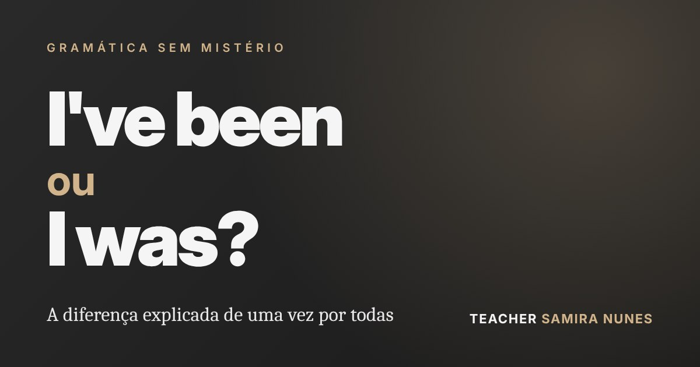

Blog
Inglês sem mistério
Dicas práticas de gramática, pronúncia e conversação para brasileiros que querem falar inglês com segurança.

Conversação
Entendo inglês, mas não consigo falar: por que isso acontece e como destravar
Inglês passivo x inglês ativo e cinco práticas simples para transformar o que você entende em inglês falado.

Gramática
I've been ou I was? A diferença explicada de uma vez por todas
Quando usar cada forma, as palavras que entregam a resposta e os erros mais comuns de brasileiros.